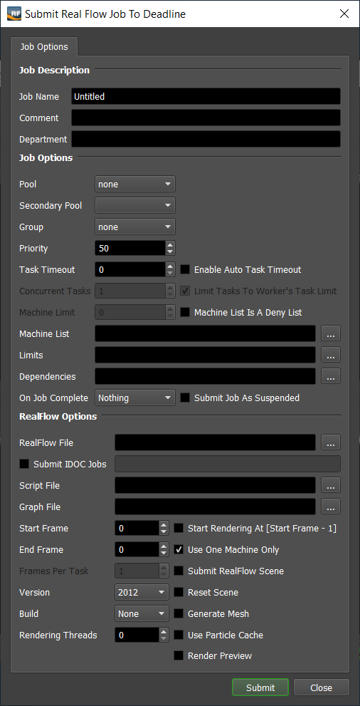
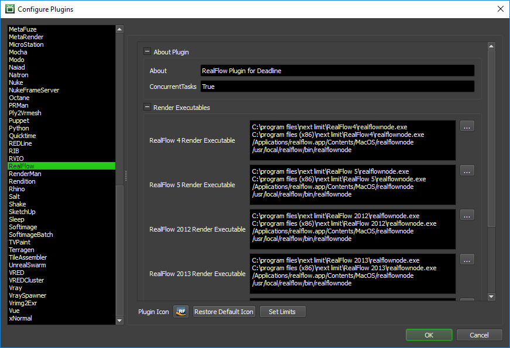
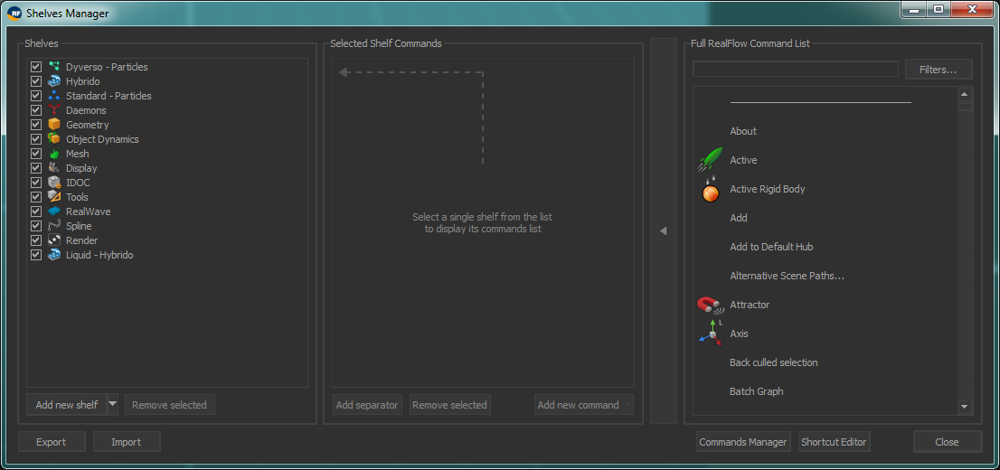
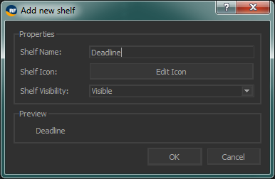
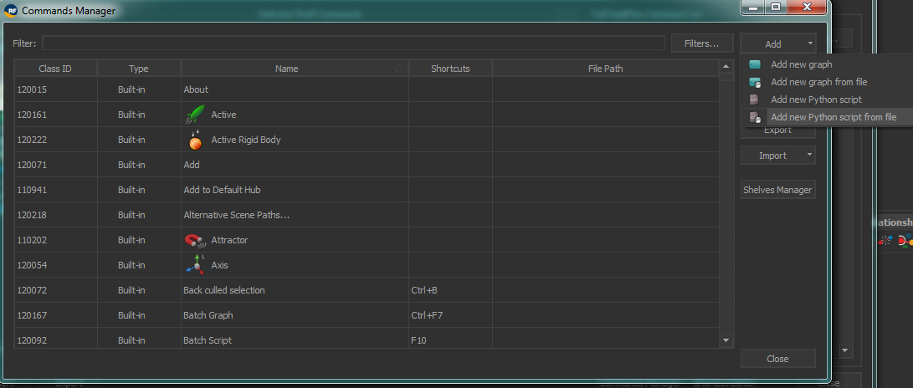

Realflow¶
Job Submission¶
You can submit jobs from within RealFlow by installing the integrated submission script, or you can submit them from the Monitor. The instructions for installing the integrated submission script can be found further down this page.
To submit from within RealFlow 5 or later, select Commands -> System Commands -> SubmitToDeadline.py.
To submit from within RealFlow 4, select ‘Scripts’ -> ‘User Scripts’ -> ‘Deadline’ -> ‘Submit To Deadline’.
Submission Options¶
The general Deadline options are explained in the Job Submission documentation, and the Draft/Integration options are explained in the Draft and Integration documentation.
The Realflow specific options are:
RealFlow File: The scene file to be rendered.
Submit IDOC Jobs: Enable to submit separate IDOC jobs for each IDOC name specified. Separate multiple IDOC names with commas. For example: IDOC01,IDOC02,IDOC03.
Script File: Use an external batch script file (.rfs) with your simulation.
Graph File: Use an external RealFlow graph file (.rfg) with your simulation.
Start Frame: The first frame to render.
Start Rendering At [Start Frame - 1]: Enable this option if RealFlow rendering should start at the frame preceding the Start Frame. For example, if you are rendering frames 1-100, but you need to pass 0-100 to RealFlow, then you should enable this option.
End Frame: The last frame to render.
Use One Machine Only: Forces the entire job to be rendered on one machine. If this is enabled, the Machine Limit, Task Chunk Size and Concurrent Tasks settings will be ignored.
Frames Per Task: This is the number of frames that will be rendered at a time for each job task.
Submit RealFlow Scene: If this option is enabled, the scene file will be submitted with the job, and then copied locally to the Worker machine during rendering.
Version: The version of RealFlow to render with.
Reset Scene: If this option is enabled, the scene will be reset before the simulation starts.
Build: You can force 32 or 64 bit rendering with this option.
Generate Mesh: This option will generate the mesh for a scene where particle cache files were created previously.
Rendering Threads: The number of threads to use for rendering.
Use Particle Cache: If you have created particle cache files for a specific frame and you want to resume your simulation from that frame you have to use this option. The starting cached frame is the Start Frame entered above.
Render Preview: Enable this option to create a Maxwell Render preview.
Plugin Configuration¶
You can configure the RealFlow plugin settings from the Monitor. While in power user mode, select Tools -> Plugins Configuration and select the RealFlow plugin from the list on the left.
Render Executables
Realflow Executable: The path to the Realflow executable file used for rendering. Enter alternative paths on separate lines. Different executable paths can be configured for each version installed on your render nodes.
Integrated Submission Script Setup¶
The following procedures describe how to install the integrated RealFlow submission script. This script allows for submitting RealFlow render jobs to Deadline directly from within the RealFlow editing GUI.
You can either run the Submitter installer or manually install the submission script.
Submitter Installer¶
Run the Submitter Installer located at
<Repository>/submission/RealFlow/Installers.
Manual Installation¶
RealFlow 2014 and Later:
Launch RealFlow.
- Select Tools -> Shelves Manager.
- 
- Select Add a New Shelf to create a new shelf.
- 
- Select Command Manager to open up the Command Manager.
- 
In the Command Manager - select Add -> Add New Python Script From File.
In the Add Script Dialog, find the script
[Repository]\submission\RealFlow\Client\DeadlineRealFlowClient.py. You may wish to copy this script to a local drive to improve the speed at which the submitter will open.Close the Command Manager.
In the Shelves Manager add the new command DeadlineRealFlowClient to your Deadline Shelf.
RealFlow 5 to RealFlow 2013:
Copy the file:
[Repository]\submission\RealFlow\Client\DeadlineRealFlowClient.py to [RealFlow Install Directory]\scripts
Launch RealFlow.
Now you can select Commands -> System Commands -> DeadlineRealFlowClient.py.

RealFlow 4:
Copy the file:
[Repository]\submission\RealFlow\Client\DeadlineRealFlowClient.py to [RealFlow Install Directory]\scripts
Launch RealFlow and select Scripts -> Add.
In the Add Script dialog, for the Name enter Submit To Deadline, and for the Script enter the path to the DeadlineRealFlowClient.py file that you just copied over. Then click the New Folder button and name the folder ‘Deadline’. Then select the ‘Deadline’ folder and click OK.
Now you can select ‘Scripts’ -> ‘User Scripts’ -> ‘Deadline’ -> Submit To Deadline to launch the submission dialog.
FAQ¶
What versions of RealFlow are supported by Deadline?
RealFlow versions 3 and later are supported. The integrated submission script is only supported in RealFlow 4 and later. RealFlow 3 jobs can still be submitted from the Monitor.
Does rendering with RealFlow require a separate license?
Yes. You need separate command line licenses to render.
Can I render separate IDOCs from the same scene across different machines?
Yes. You can specify which IDOCs you want to render in the submitter, and a separate job will be submitted for each one.
Why is RealFlow looking for the particle cache on the local C:\ instead of on the network?
This is likely happening because you are choosing to submit the RealFlow file with the job. This means the file is copied locally to the Worker machines, which is why they are looking for the cache locally. If you disable the option to submit the file with the job, the Worker machines should be able to find the cache properly.
Error Messages and Meanings¶
This is a collection of known RealFlow error messages and their meanings, as well as possible solutions. We want to keep this list as up to date as possible, so if you run into an error message that isn’t listed here, please visit the Thinkbox Help Centre and let us know.
Exception during render: [RealFlow Error]: License file not found.
RealFlow requires a separate license for network rendering, and that licensing system needs to be setup before you can render through Deadline.

{kind=link}
{kind=link}
{kind=link}
{kind=link}
{kind=link}
{kind=link}
{kind=link}